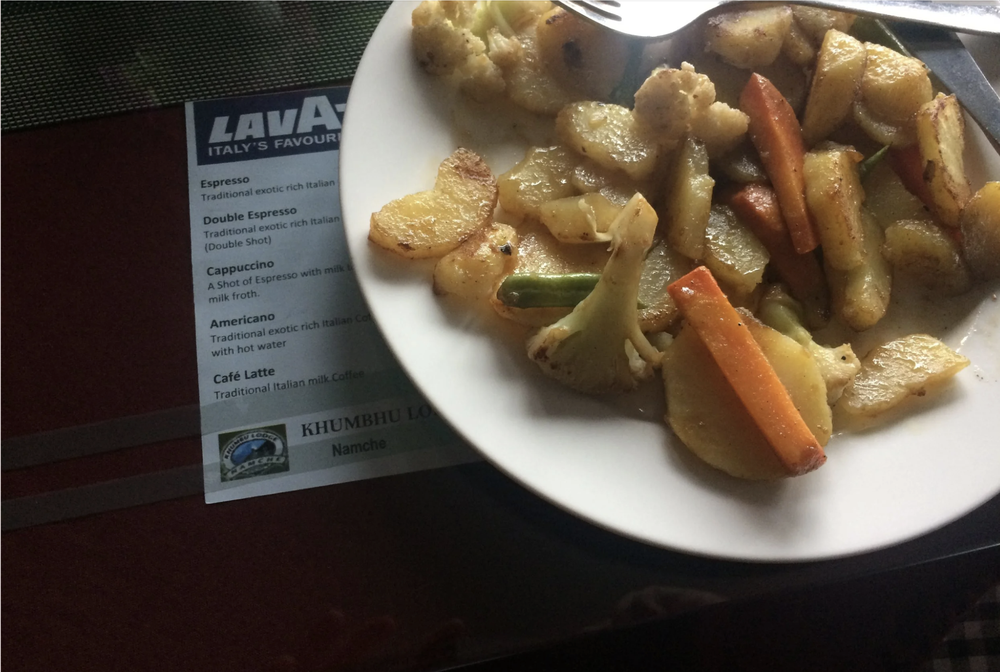
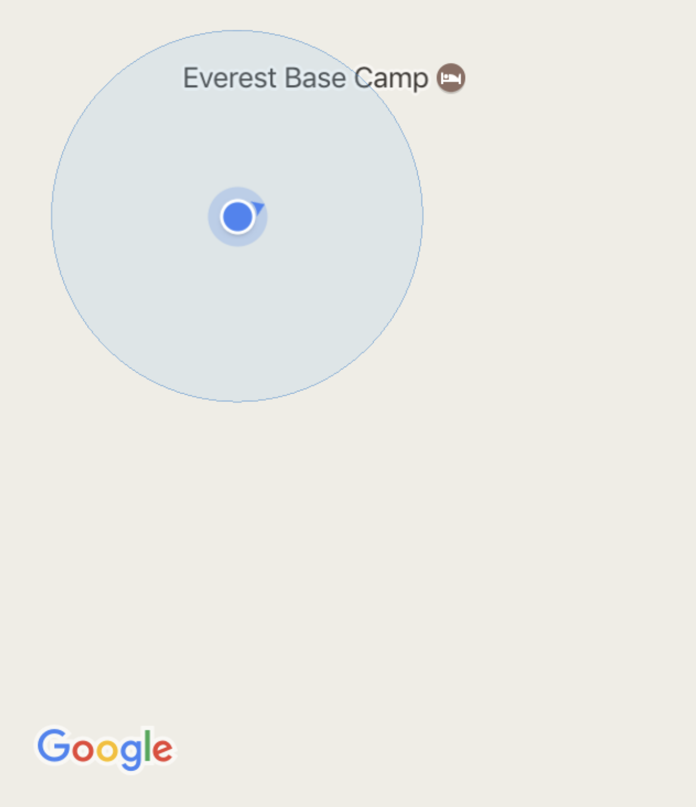
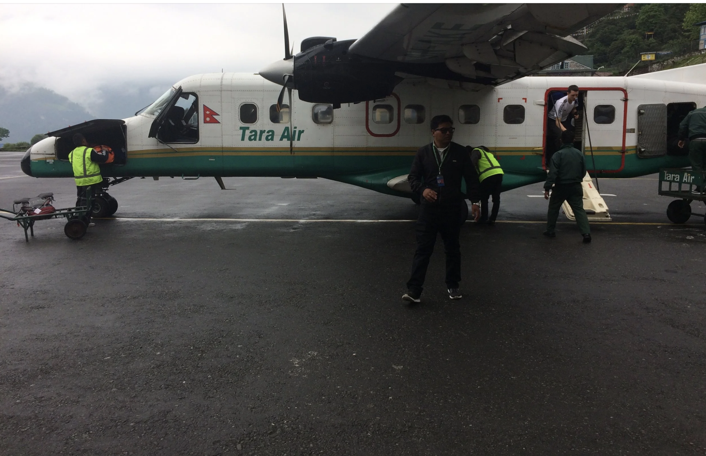

The trek started very late. Joy-rode a chopper to Lukla with the Ahujas. Stopped at Mera Lodge in Lukla — could only afford mushroom soup for 250 NPR after the chopper cost. At Chhutawa, a Sherpa girl offered a free boiled egg, tea, and boiled noodles. Set out alone at 7 PM with a headlamp. Found Namaste Lodge in the dark — 100 NPR for a room. Noodles for dinner at 300 NPR. 9:30 PM — good night, good luck.
Body clock set for mountains — woke at 5:30. Left at 7:30. Easy walking through Bengkar, reached Monjo at 11:30. TIMS card verified, entered Sagarmatha National Park. Chicken soup in Jorsale at 1 PM. Painkiller for chest pain — muscle strain. The final 3 km to Namche: straight up a mountain. Mixed veg and fried potato for 390 NPR. Accidentally slept at 5:30 PM straight through dinner.

Blue sky morning. Omelette for 350 NPR. Solo blind climb to Everest View Hotel in Shyamboche — asked every person along the way. Made a Malaysian friend named Tee. Eyes widened at the first sight of Everest — white, distant, real. Cheese omelette at the hotel cafe for 350 NPR. Clouds rolled in. Khumjung School visit cancelled. Descended back by 3 PM. Sherpa stew with meat for 300 NPR. Tomorrow — Tengboche, alone.

Late sleep but pushed off. Jam and toast, 300 NPR. Mrs. Ahuja insisted on a photograph before leaving. Left dazed and solo. Met Siddhartha from Mumbai at a tea stop — tagged ourselves as not solo anymore. Crossed Dudh Kosi river. Plain rice and cheese at the riverbank, 400 NPR. The final ascent to Tengboche: straight up in razor-thin air. Room 100 NPR. Sat by a fireplace with Amar, Spence, Emily, their guide. Ten rounds of Uno until midnight — Spence 3, guide 4, me 2, Amar 1.
Pushed to the restaurant at 6 AM. Jam and toast. Waited for Siddharth. Easy trail through Deboche and Pangboche — bought sunscreen for 900 NPR (pack it from home). First cup of tea — lemon — confirmed why I don't drink tea. Lunch at Somare: first Dal Bhaat of the trek. Met a German girl. Rain came lightly climbing toward Dingboche. Arrived with relief. Plywood room. Woke from a 20-minute nap feeling drugged. Plain rice with cheese, 450 NPR. Then — Everest, moonlit, through the window. Ran for the camera.

Woke early, tried to sleep more, couldn't. Convinced Sid to find a better lodge. Visited the Dingboche Gompa — Sid taught me the Wim Hof breathing technique for acclimatisation, meditated while I explored. Migrated both bags to Bright Star Hotel. Walked around the hilly town to warm up the legs for tomorrow.
Cheese toast 350 NPR. Plain rice with cheese 450 NPR. Potato cheese burger 500 NPR for dinner — a mini treat. By the fire, chatted with a French girl trekking with an Indian friend. Still hard to believe Base Camp is just days away.
Rubbed sleepy eyes but pushed it. Corn flakes for 350 NPR. Left at 7:30. Gentle climb at first, then two trails, no markers — asked someone, headed into a plain spread of soulless land. Reached tiny Thukla — tomato soup at Kala Pathar Lodge, 450 NPR.
Then the ascent to Lobuche began: steep, standing, thinning air, leading to a massive memorial for Sherpas lost on Everest. A real achievement just to stand there. New EBC Guest House — clean, newly built. Met a solo traveller from Peru. Woke at 12:30 AM with a headache, all paranoid. Painkiller over Diamox. Slept comfortably after.
Omelette for 510 NPR. The trail to Gorak Shep felt endless on the flat moraine. Then the rocky trail to Base Camp — flags visible long before arrival. The glacier, the prayer flags, the silence.
You stand at a place most people only read about. The glacier moves imperceptibly. The flags flap. Everything below this point suddenly makes sense.
Set off at a fast pace — glorious feeling of having touched Base Camp. At the memorial stones it started pouring rain. Rushed back down the steep descent to Thukla — better to take refuge than push through cloud cover. Boiled egg and rice and cheese, 800 NPR. Then headed for Pheriche.

Left Thukla at 5:30 AM. The longest day on the trail. Twelve hours of walking — the body descending through every altitude it had climbed across the previous week. The knees felt every stone. Namche by evening. Dal Bhaat, a proper lodge bed. Slept immediately.
Easy morning in Namche. The familiar trail in reverse — every descent now a memory of the climb up. Lukla by afternoon. The runway that shouldn't exist. The relief of arriving. Because I can.
Clouded window. No flights out. The weather that rules Lukla Airport rules everything. Waited. Ate. Waited more. Slept hungry. The mountain holds you until it decides otherwise. It will be revisited.

Starving. Flight out of Lukla. Kathmandu below. Thirteen days — solo, every meal accounted for, every stranger remembered by name. The roof of the world was real. Slept straight through till morning, entirely at peace.
All figures — distances, footsteps, costs in NPR — are approximate, based on 2017 conditions. Prices and permit requirements change annually. Verify before you go.
Permits Required
- TIMS Card — Trekkers Information Management System. Obtain in Kathmandu or Lukla. Checked multiple times on trail.
- Sagarmatha National Park Permit — obtained at Monjo entry gate. Do not lose it.
- Carry both in a waterproof sleeve. Both are verified repeatedly.
- Costs and rules change annually — verify before departure.
Getting to Lukla
- Fly Kathmandu → Lukla (Tenzing-Hillary Airport). One of the most dramatic runways in the world.
- Flights are entirely weather-dependent. Build 1–2 buffer days in Kathmandu — and in Lukla on the return.
- Helicopter option exists — faster, costlier, no acclimatisation advantage.
- Book flights early. Season seats fill fast (March–May, Oct–Nov).
Acclimatisation
- Rest days at Namche Bazaar (Day 3) and Dingboche (Day 6) are non-negotiable. Do not skip them.
- On rest days — hike higher during the day, sleep at base altitude.
- Never ascend more than 400–500 m per day above 3000 m.
- Headaches, nausea, appetite loss = AMS warning signs. Descend if symptoms worsen.
- Diamox is an option — consult a doctor before departure.
Gear Essentials
- Layering system — moisture-wicking base, fleece mid, windproof outer shell.
- Down jacket — essential above Namche. -10°C and below near EBC at night.
- Trekking poles — your knees will thank you on every descent.
- Sunscreen SPF 50 — UV at altitude is brutal. Buy it in Kathmandu, not at 4000 m for 900 NPR.
- Headlamp + spare batteries — you will use it.
- Cash in Nepali Rupees — no ATMs beyond Namche Bazaar.
Food & Budget
Prices increase sharply with altitude. What costs 300 NPR in Phakding costs 600 NPR near Lobuche. Carry cash — no ATMs above Namche.
| Meal / Item | Approx. Cost (NPR) | Notes |
|---|---|---|
| Mushroom soup (Lukla) | 250 | First meal on trail |
| Lodge room per night | 100 – 300 | Margin is in food — you eat at your lodge |
| Dal Bhaat | 300 – 500 | Most reliable meal. Order it always. |
| Plain rice with cheese | 390 – 450 | Simple, filling, everywhere |
| Fried potato with veggies | 350 – 500 | Standard lodge dinner |
| Potato cheese burger (Dingboche) | 500 | Mini treat at altitude |
| Sunscreen SPF 50 (Pangboche) | 900 | Pack it from home |
Going Solo
This entire trek was done alone — no guide, no porter. Entirely possible, and deeply rewarding, if you are physically prepared.
- Solo trekkers naturally find company. Fellow trekkers become trail companions within hours.
- Tell your lodge where you are going each morning. They expect it.
- The trail is well-marked. Getting lost on the main EBC route is genuinely difficult.
- Your pace is your own. This is the single greatest advantage of going solo.
- Download an offline map (Maps.me or Gaia GPS) before leaving Kathmandu.
- Register your solo trek with a trekking authority if possible — safety net for emergencies.